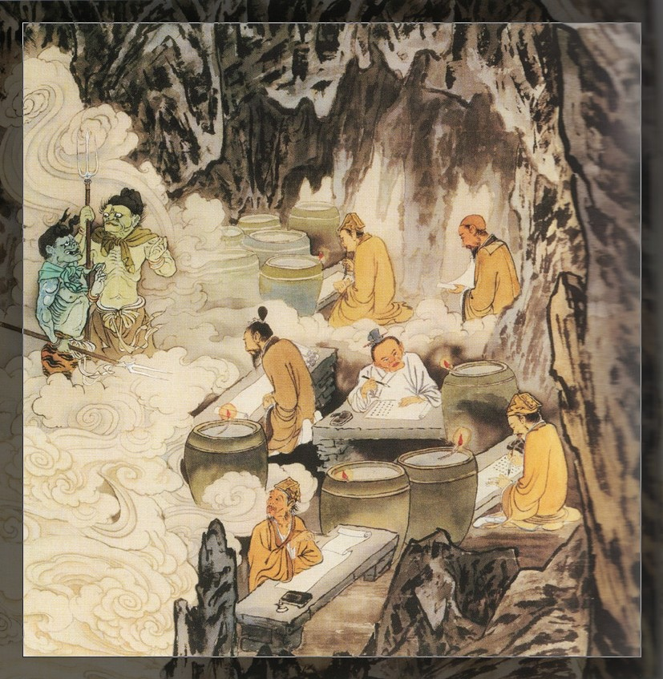
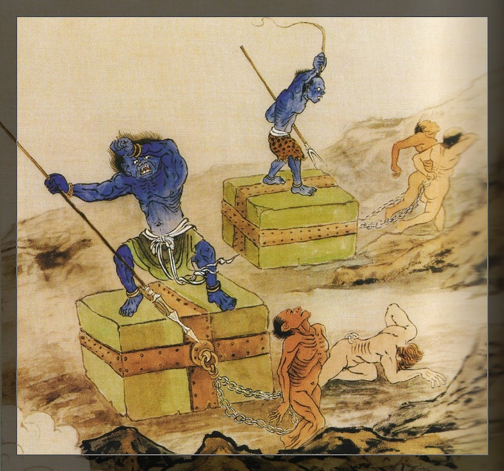

地狱变相图前言宇宙定律 因果之源众圣来迎驾鹤西归重得人身魂归地府地狱门前业相现形【第一殿】秦广王自杀报应因果路上误人子弟悔之晚矣离经叛道居福造罪自作自受抱柱地狱火床地狱【第二殿】楚江王戟腹抛接狱剑叶地狱舌犁地狱鞭挞地狱砧截地狱寒冰地狱饿鬼地狱浓血地狱粪尿地狱【第三殿】宋帝王捣舂地狱抠眼地狱倒烤地狱刖足地狱吸血地狱蛆蛀地狱穿肋地狱抽筋地狱【第四殿】五官王腰斩狱拔舌地狱吊舌地狱沸汤地狱剥皮地狱剑树地狱火轮车崩地狱射眼地狱【第五殿】阎罗天子击膝地狱抽肠割心地狱刀山地狱飞刀火石地狱【第六殿】卞城王钉喉地狱碓捣地狱磨摧地狱（又名铁磨狱）斫头地狱虎啖地狱火牛地狱（又名牛雕马躁）噬肾地狱【第七殿】泰山王拔舌穿腮地狱顶石蹲身地狱狗嚎狼啖地狱油釜地狱【第八殿】都市王磅称地狱铁丸地狱炙髓狱锯斫狱铁蛇地狱铁汁地狱火狗地狱【第九殿】平等王蜂蝎地狱毒蛇地狱夹顶取恼地狱钉石立峰地狱（又名蹲峰地狱）鸦食地狱针雨地狱【第十殿】转轮大王结 语
地狱变相图
前言
宇宙定律 因果之源
生死乃人生之大事，为宇宙之定律，也是宗教家所谓之「因果轮回」道理。人因何而生，又因何而死，生前是何状况？死後何去何从？眼前一切贫富贵贱，寿夭康疾以及爱恨情仇之种种现象，又当如何看待？岂可不严肃省思与对待。
《 论语 》中子路问死。子曰：「未知生焉知死。」似乎已明白透露出生与死是息息相关的。生前之造作，死後由灵魂去算帐。又《易经?系辞坤卦文言》云：「积善之家必有余庆；积不善之家必有余殃。」虽未道及因果报应，其理业已道明了。
故云：「缘乃因果母：六道由之生。」真是至诚至恳、纤毫不虚之道理。又云：「万法唯心造。」天堂、修罗、人间、饿鬼、畜生、地狱之六道，皆不离自心习气所造作而成。人生际遇，或顺或逆，无一不是自作自受，不必怨天尤人。既知如此，何妨试扪心自问，眼前起何心动何念？大胆归纳恐怕只有「自私自利」四字而已。因自私而起贪念，贪不顺遂而起瞋心，瞋失理性而生愚痴心，其中习气不外乎「财、色、名、食、睡」，错综纠葛而恣情纵慾，导致「杀、盗、淫、妄、酒。」为自己造罪及营造自残的地狱。想到这里真叫人不寒而栗。
既知因果操之在己，若能及时改过向善，为时未晚，当先诚心自忏，诸恶莫作，众善奉行。眼前一切福分，当思来之不易，应加厚培珍惜；眼前咎灾祸殃频仍，皆是前生自造，应当真心忏悔，承受而无怨。亲近善知识（进德修业），速离恶知识（淫乱邪行），竭诚奉行，必然境随心转，化殃为福。

众圣来迎
一生成就在当下 六字洪名出乾坤
六道形成，升堕无常，皆由习气染着之轻重而别，故有苦乐无常，亦不离生灭轮回之现象。因此谓：「六道轮回，头出头没，苦不堪言。」
既知六道不究竟之苦，当严肃看待，如何能了生脱死，永不再堕轮回？唯从「制心」做起，制心一处，万缘放下，心不外攀，老实安分，自净其意，是谓「净念」，此即净土念佛法门之要义。
「念佛临终见宝台，宝幢宝盖满空排；弥陀势至观音等，合掌相随归去来。」此乃念佛成就之境界。
阿弥陀佛，以无比慈悲愿力，成就清净、平等、光明、无染的极乐净土，只要十方世界一切众生，以真诚信心与坚定愿力，恳切念「南无阿弥陀佛」名号，至临命终时，必蒙阿弥陀佛亲率菩萨圣众，前来接引往生极乐净土，永不堕六道生死轮回。念佛往生是诸修行中最为便捷之法门，古德赞云：「当生成就」，并且是「万人修万人去」之殊胜法门。只要是非人我全放下，一句阿弥陀佛锁心头，坚定「信、愿、行」三资粮，由生入熟，由熟而纯，自然去秽存净，何愁净业不成？况念佛人心，与佛同心，与佛同愿，与佛同悲之不回向法门。以清净心感清净佛，心心相应、融为不二，当下遂生净土，故云：「法门无量，念佛第一。」其殊胜之处在此。

驾鹤西归
瑶池咫尺寸心近 黄鹤只乘厚德人
古德云：「人成佛成」，可见成佛非凭空想像，亦非盲修瞎练所能成就，必须落实在「根据教奉行」，唯真唯诚，坚持信愿与实践，且终生不倦不疲，先成就人格，方能了道。佛经云：「极乐世界，诸上善人俱会一处。」绝非龙蛇杂处之地，是个「清净、平等、正觉」共同信念之殊胜世界：方称之极乐。
成就人格，首重五常，仁义礼智信者，乃做人基本原则。仁者：乃以孝养父母、奉事师长、慈心不杀为基础，处世待人，心存厚道，己所不欲，勿施於人，深恤民疾，不惹烦恼。义者：言行举止，无不公正合宜，不起窃心，不占便宜，不偏不倚，俯仰无愧。礼者：洁身自爱，知节用和，克己制慾，不涉奸乱，端正心思，以德治事。智者：随顺不染，明白事理，不可感情用事，不瞋不怒，平心静气，临事不乱。信者：民无信不立，与人交往，言必合宜，绝不食言，不妄言，不轻诺，言既出，事必行。此五常者，成就人格之本，可谓之积德修善之人也，纵然未能往生极乐，临终必升天堂，安然自在，道遥享受天福。
重得人身
五戒成人格 七佛尚蚁身
佛教《杂阿含经》云：「人身难得，犹如盲龟遇浮木孔。」然而既得人身，却命在呼吸间，一气不来，就结束生命。一失人身，万劫难复。再者，佛在灵山指一只蚂蚁与其弟子说：「已经过七尊佛出世，此蚁尚未脱离蚁身。」可见得一人身何其难也。但要了生脱死，不入生死轮回，唯以人身才能修行。
欲想来世再得人身，必须在此生创建端正人格，必须守住五戒。五戒者：一、不杀生；仁也，二、不偷盗；义也，三、不邪淫；礼也，四、不妄语；信也，五、不饮酒；智也。此乃佛门五戒，其与儒家五常息息相关，是成就人格的基本条件。至於既得人身，何以又有「富贵贫贱之别，恩怨情仇之苦」？这一切皆肇因於个人宿世造业有善恶多寡之别。古德云：「欲知前世因，今生受者是；欲知来世果，今生作者是。」应知因缘果报，非由上帝、阎王安排，而是自作自受，故曰：「各人吃饭各人饱，各人因果各人了。」
魂归地府
人天已无分 地狱却有缘
「去年次你哭他，今年次我哭你，怕是明年次人，又向我烧纸。」这是人生，数十寒暑而已。几人庄重想过？几人觉悟？今生享福转成孽，来生持孽招何门，五常不遵纲伦散，十善不修万恶滋。世间无人格，人身岂有分？
瞬间，镜中影伛偻，不复少年次身。转眼无常到，不论俗与僧，将相王侯俱往事，独挑罪业任浮沉。孤魂无助黄泉道，奠肴生冷足下灯，飘飘忽忽山海路，无奈回来地狱门，回头一望叹口气，误人误己能怨谁。
地狱门前
阴风寒沁骨 无常摄幽魂
生死阴阳，寄在呼吸间，一气不来成永隔，呼天抢地也枉然。此时，一切都完了，悔之晚矣。眼前但见一片迷朦昏暗，似乎只有一盏游丝般的微弱寒光，隐约带领着无助的幽魂缓缓前进，回头一看， 「唉哟！我来了，你怎麽也来了？他怎麽也跟着来了？」 一票都是熟面孔，原来是生前一起造业的同夥。抬头一望，「喝！怎麽？那不是大总统麽？还有那政府要员、民意代表，无一不是熟面孔。怎麽也个个面无人色，混杂在众魂中，当日嚣张跋扈不可一世的气势今安在？」更令人费解的是，怎麽又有一批高知识分子，以及标榜传道解惑的教师、僧侣及神职人员，也在簇拥的游魂中，且哭且啼令人鼻酸！
突然一声霹雳般的吼道：「你又来了！」此时个个胆战心惊，只见一位身高丈余，浑身火焰，手执钢叉、身缠铁蛇、青面獠牙、狰狞可怖的鬼王吆喝着，原来前面已是地狱门，来相迎的正是黑白无常，以及判官鬼役。白无常摇着白羽扇；黑无常捧着铁算盘，正所谓「一扇挥不去，老帐此时结。」红袍判官手掀生死簿，口喝着前来报到的幽魂，虽然双腿已软，身子却情不自禁的飘过地狱门。
业相现形
一瞋出厉鬼 形影不离身
飘过地狱门，巍巍铁铸的山岩峭壁，冒着终古不熄的赤焰，一望而无际。报到後的幽魂，不分贫富贵贱或男女老少，每人身边都伴着一位狰狞可怖的厉鬼「随从」，如影随形；以铁链套颈，牙棒摧身，拖拉前进。这些夜叉厉鬼，随情绪而变色异形，或青、或绿，或人、或兽，十分恐怖。
地狱所有种种现象，无一不是自己因地造孽之形现，应知生前做尽损人利己，尖酸刻薄，仗势凌人，性情残酷，喜怒无常等事，或言语、或行为无所不用其极。地狱种种可怖现象、残酷无情，皆是自己孽缘的发酵，加乘於百千万倍来回报自身而已。
唉！极乐、天堂的自在，是清净心与善良心所成就；地狱、畜生之痛苦，当然也是罪孽恶习所使然。同是一个心，却有两样情，怨谁呢？正所谓：「苦海无边回头是岸，地狱无门休咎自取。」地狱之阴森恐怖，阎王判官，夜叉厉鬼，无一不是「心镜」的反映，堕地狱来承受自己良心的审判，罪业的摧残。是谓「因果报应，丝毫不爽。」半点不由人也。
【第一殿】秦广王
业证心明 . 自杀报应 . 因果路上 . 误人子弟 . 悔之晚矣
离经叛道 . 居福造罪 . 自作自受 . 抱柱地狱 . 火床地狱
七日为一周期，古今中外都如此，例如西洋七日一礼拜。生命之变异也一样，一旦人命终後，未受报前称为中阴身，中阴身之寿命七日一变化，死而复生，未得投胎之缘，顶多七七四十九日罪业审定，即发配各大小狱受报。
此期亲属为亡者修福追荐，令亡者最能受用其功德，可由劣地转为胜地，因而称此四十九日为慎终期。此後百日、周年次、三年次仍可追荐，称为追远期。七个七须经七个殿，百日、周年次、三年次，再经三殿，共计十殿，故本图又称「十王图」。年次年次祭祀，不忘孝德绵厚也。
一七为「第一殿秦广王」，秦广王心性至仁至孝，统辖人间寿命之长短，一生功过经由各地城隍、土地、查察司会报本殿，由秦广王亲审宣判，功过相当者，免受其刑直转第十殿转轮王处，或者点击照其生前所造善恶发放投胎，或男或女，或贫或富等承受其果报。罪孽深重者，发配各殿大小地狱去承受应得的酷刑以消业。
此时，秦广王正审判着一件子媳不孝，遗弃老父案件。夜叉拘来不肖子，他却大呼冤枉，老父无奈的据实指责，其媳则惭愧自责，掩面哭泣。在旁之城隍判官等陪审者，无不动怒，且举其罪状以供宣判。
慎终追远民德厚，万恶之极不孝人。
孽镜台前无好人 狡狯奸诈难遁形
秦广王，审案严明谨慎，且明察秋毫。有顽劣罪犯，刁钻狡猾，百般强辩，能说善道，执似是而非之歪理，死不认罪，并且直呼冤枉。这类恶徒为数不少，其在世间如此，到阴间亦如此，恶习难改，常存侥幸之心。此时，秦广大王也懒得与其费辞，喝令鬼差，将狡猾罪犯，押解到大殿之右「孽镜台」前，照照其生前一切恶状。其所作所为，全都录在一镜之中，幕幕呈现，件件不遗，令这些罪犯个个脸色惨绿，不得不伏首认罪。
孽镜台高数丈，嵌於铁壁之中，愁云深锁，阴森可怖，一旦罪犯押解镜前，随即现形，从生到死，种种罪孽巨细不遗，尤其是忤逆不孝，欺师叛道，忘恩负义，唆使犯罪，杀人放火，或奸盗行骗，或蛊惑群众而导致战争等，清清楚楚，幕幕历历，并列出应判之罪，应受之报应等。
唉！「万般带不去，唯有业随身。」人之一生，短短几十春秋，为了臭皮囊，或为了私慾，竟然如此，一旦原形毕露，连押解你的小差役都瞧不起，棍棒鞭挞侍候，那管你生前权位尊荣，冢财万贯，名门贵胄，其苦痛哀号之声，并无二致啊！
自杀报应
违天逆道负恩义 罔顾伦常无间报
我国古来治国，首崇孝道。人无孝道，行必失德。若弃父母而不顾，焉能为天下苍生立命呢？故旧时代官府以「忤逆」为第一重罪。即使误伤父母，也不轻判，更何况弑父弑母之恶行呢？
盖天下父母无有不疼惜子女者，故谓骨肉之亲；然天下子女无不孝父母者，是谓天伦也。当体念身体发肤，来自父母，所流血液皆根源於祖宗遗泽。况父母生我、哺我、抚我、掖我、栽培我、教育我，期我敦正品格，成为家国之栋梁，为天下苍生造福，光耀门楣厚泽流芳，其恩之高，其义之远，能不感念生命及身体之可贵，岂敢轻易毁伤呢？
自残或轻生，是毁伦不孝之重罪，不仁不义不智不勇之行径，是弑杀父母爱心的行为，上无颜见列祖列宗，下愧对於子孙老小。因一时冲动，铸成大错，不智不勇，实乃懦夫也，令人鄙视。当知自杀之罪，必堕地狱，所受酷刑，难以言喻。
愚痴的人，误认一死当百了，不知因果报应之可怕。此种死法是受罪之始，由於临死前内心之痛苦矛盾，触动良心挣扎与不安，这种不安即构成严重的自责，难以自恕，产生极度惊慌恐怖，令得魂魄支离散乱，且每日不断重现自杀时的极度痛苦与恐惧。魂无归宿，长达三年次之久，然後入地狱受严判重刑。在此三年次之中，阳世亲人设办法事，诵经拔荐，供奉祭品，一概皆无福消受，享不到一切回向功德，凄惨状况，难以想像。
再者，更有逼人走上绝路，或唆使散播教人轻生方法者，或贩售自杀药物器材者，是违天逆道之至恶行为。其心狠毒者，往往得现世报，家人易遭不测，其死後必堕无间地狱，并且祸延子孙不得安宁，因果之可怕，当慎思之也！

因果路上
天下之乱 始於知识份子失去良知
迷朦光中，几个青面差使，押解一批罪犯，在寒铁山洞穴中穿梭而过。这批罪犯，个个衣冠楚楚，看得出其生前之显赫与荣耀，从服饰穿着来看，有不同的阶级与地位；有的应该是政客，有的应是掌有权位的学者，在他们的神色之间，根据然残留几分得意与跋扈。孱杂人群中也有宗教人士、神职道侣，享尽人间一切福报，辜负众生之供养。此时个个神情凝重，似乎已嗅到「大事不妙」的气息。
误人子弟
善恶终经因果秤 举头三尺有神明
凡世间人，遭逢逆境时大多怨天尤人，处得意时就意气风发，恣情行事，处事待人接物全凭个人之爱憎与冲动，往往不遵因果法则考量，全不思未来之因缘果报、福祸庆殃，或自暴自弃，或跋扈嚣张，造下祸害而不自觉。
谚云：「善恶终经因果秤，举头三尺有神明。」此时，阴阳查察司带领一批罪犯，他们是曾在世间深具影响力之宗教家与教育学者，让他们瞧瞧在他们教育领导下的青年次学子之现状：纵慾放荡，吸毒滥情，奸杀掳掠，劫财劫色，乱伦忤逆，数典忘祖，浑浑噩噩，无所事事，心智迷惘，行为堕落者比比皆是。其偏差观念、错误引导，影响之深，祸害之远，真是天地难容。
悔之晚矣
学不安道 空对圣贤
凡是於世上拥有地位声望者，无非宿世修来的福报，方有今生之聪慧、灵敏与智能。饱读圣贤书，方受群众之信赖与爱戴。
读圣贤书，志在希圣学贤，当用於化民成俗，培育後昆。遗憾的是，诸多学者教师，志在名利权位，以圣贤之道为登龙工具，一旦得势，辄自我膨胀，叛离圣道，标新立异而譁众取宠，蛊惑人心，坏人心术，导致灭经毁伦之乱象，罪不可赦也。此时判官押解此类知识罪犯，跪倒经典之前，但悔之晚矣，准备下无间地狱吧！
离经叛道
巧谋油水千缸满 辜负人间一片诚
从事社会教育者，或神职僧尼人等，其宗旨在服务人群，传道解惑，导正人伦。却有一些沉迷贪慾，图名图利者，巧用身分骗财骗色，或假托灵异符咒，行以怪力乱神，诈欺信众，巧索供养。有时信众以真诚恳切心乞求诵经拜忏，以期消除业障，他们却高价计较，又敷衍了事，诵经漏字跳行，拜忏心不在焉。不真不诚，岂能感应？破坏清净庄严之仪轨，使信众心存疑惑，更造口业，罪过大矣。
此类罪犯，影响社会对文化之观感，引起人们对宗教之质疑，导致不信因果，滋生罪薮。当知既为社会教育者，身披法服，不能淡泊世俗名利，言行失检，严重污蔑圣道，扭曲因果，当堕无间地狱。其人临命终时，得不到佛力加持，受不到家人超渡，遂经审判先押解於万年次暗室中，令其补写跳漏经句。此处阴寒无光，设有千缸火油，皆是罪犯生前不义之财所聚，每人只许一线灯芯，在微弱灯火忽明忽暗且摇晃不定中进行补写漏字，一字一忏悔，一而再，再而三，重复补写，待千缸火油耗完为止，再押往其他地狱受其酷刑。
唉！「巧谋油水千缸满，辜负人间一片诚。」终究得不偿失！

居福造罪
青灯如豆千斤油 难照黑心无道人
世间不少假僧道、伪牧师或领袖人物，学识崇高，位居极品，却无心治世弘道，只迷恋名闻利养，更不择手段以达目标。如是之人，富於心机，能言善辩，颠倒是非，玩弄因果，且排斥轮回之说，兴风作浪，制造冲突，挑拨矛盾，以满足其私慾。一面佯装仁慈可怜，一面却冷酷无情，多重人格，喜怒无常，对社会做出至恶之示范，对世道人心影响深远，伤害难以弥补。导致世人不信因果，为非作歹忝不知耻，纵情堕落，忤逆乱伦，奸杀掳掠，无所不至。
噫！古人云：「身在公门好修行。」身居福地，而不思得来不易，却胡作非为，害己害群。此类罪犯永堕阿鼻地狱，酷刑无间，报尽再受鬼畜之身尝还欠债，方得超生人道。
自作自受
各人吃饭各人饱 各人因果各人了
地狱之中，随时可见成千上万夜叉厉鬼，血口钢牙，眼如电光，利爪如钢铁，箝制罪犯，押解拖放至各大小地狱。
此类夜叉厉鬼，无一不是自己业力显相；凶残恶毒，无不是怨憎心而起现形，今往何地狱受何酷刑，一一皆是造罪之加倍数呈现，绝非阎罗天子之设定，而是良心之谴责。
抱柱地狱
慾海无边邪淫起 钢床火柱是家邦
今日社会经济蓬勃，思想开放，物质充裕，固然带来方便与自由；然不可否认也带来生态失衡、道德式微、精神贫乏、人性堕落的後果。导致人与人间冷漠无情，现实短视，又充满了冲突暴力、滥情与堕落。
谚云：「万恶淫为首，饱暖思淫慾。」邪淫能使国失纲常，民失良知。今之世面所闻所见多是煽情事物，更有一批不负责任的「学者」，公然鼓吹性自由、性开放、性自主权等论调，媒体更大肆渲染，书刊、影带、光盘亦大量传播，或滥情派对等。殊不知为祸之大，殃及子孙何其深远！
「慾海无边邪淫起，铜床火柱是家邦。」当知万恶淫为首，倡导罪尤深。诱惑亲犯邪淫者，至死习性难改，堕此地狱，身抱火柱，惨受炮烙煎烤，血肉焦糊，成灰成烬，随风复生，重扑火柱，周而复始，犹似飞蛾扑火，明知凄惨苦痛，却情不自禁。至罪消毕，投堕畜牲报，纵得人身，亦受贫贱多疾短命，及眷属不贞之余报。
火床地狱
一报还一报 冤冤何时了
《经律异相》云：「犯邪淫者，男抱铜柱，女卧铁床。」又《正法念处经》云：「喜爱杀生，烧、烤、煎、烹、焖、燻众生肉，或践踏小虫者，死後均堕此狱；受其刑苦，时间极长，非人所能想像。」即便此罪消毕，倘有其他罪业，再堕其他地狱，一一受罪，直至罪业消竟。
杀生、淫乱，是地狱根本重罪，一切杀业都由贪、瞋而起，贪口慾，或瞋怒心而铸大错。一切众生谁愿意被杀，谁被杀而不含恨？既含恨，谁不伺机报复？杀生尚且如此，何况杀人？地狱乃公正廉明之社会，生前如何处置众生，死後必然相同对待，毫无变通折扣。
【第二殿】楚江王
戟腹抛接狱 . 剑叶地狱 . 舌犁地狱 . 鞭挞地狱
砧截地狱 . 寒冰地狱 . 饿鬼地狱 . 浓血地狱 . 粪尿地狱
楚江王殿光明正大，司掌活大地狱。堕此罪犯多是违伦常、乱法纪、造业无数、至死不悔之恶徒。如在阳间，欺骗大众玩弄法纪导致灾难，或利用权位，巧取豪夺，吸民膏脂；或符咒惑人，谋人财产；或拐诱少年次，逼良为娼；或组恶质帮派，走私贩毒，鱼肉乡民；或诈赌坑人、非法骗婚、伪造证券、贩卖伪药、扰乱秩序、危害健康等等。此殿判案严明，点击罪分发上、中、下之狱，随业轻重，各受其报，或一处报或多处报，乃至十六处之多。此殿设有火柱、铁床、钢叉、剑叶、犁地、鞭挞、斫截、寒冰等小地狱，个个刑罚严酷，无不悲惨难熬。
戟腹抛接狱
一时满足心中慾 兑换无间辗转刑
此狱犯人罪大恶极，凡在阳间如不孝父母、甚至杀害，不信因果、毁谤圣道，焚经典、烧圣像，玷污僧尼、或淫或杀；又以偏邪见解，诳惑老实人，以成就其丑陋图腾，供人崇拜。如是犯人不得好死，死後遂堕无间地狱，经千万亿劫，求出无期。此界地狱坏时，押寄他界，他界坏时转寄他方，他方坏时辗转押寄，待此界成後还押受刑，永不得超生。
又有罪人习嗜杀生，手段狠毒残酷，或以弓箭枪弹，或刀叉戟矛，或射、或杀、或刺、或剁；或以核子生化武器，毒杀众生；或以圈网捕杀禽兽，以贩卖或啖食。以上种种罪人常受此戟腹抛空地狱罪报。时有千百夜叉厉鬼，口牙如剑眼似电光，其状凶恶，手执钢戟，或刺透耳目，或穿口鼻，或戳穿腹背，或抛向空中翻滚再以钢戟刺接，或丢置火床煎爆，或喂铁汁。业报无有终时，永不超生，是谓无间地狱。
剑叶地狱
学无中心思想 行无礼义廉耻
剑叶地狱，方圆数千里，遍地长满钢锐剑叶，起伏伸缩一望无际。复有无数青皮厉鬼，押解罪犯，或拖或拉，或扛或举。来至剑田，或高举倒插，或直插，或仰或伏，无不贯透穿心，其状恐怖凄惨，沥血成河，哀号而死。死後复生，重复现象不停不休，受此刑报，岂是痛苦二字可言。
此狱罪犯，生前多是逆天悖道之徒。为人君不仁，为人臣不忠，为父不慈，为子不孝，为师无道，为徒无义等。或为君者仗其权位，恣情妄为，不能体恤民瘼，导致国困民穷，或刀兵相残，殃及无数生灵。为人父母，不能互相体谅，任性自私导致家庭破裂，遗下子女失去怙恃，沦落风尘；或为偷盗，或吸毒自残任其自生自灭。为人师表，不恤百年次树人之德，轻率删除伦理道德教育，妄加无益身心教材，导致学无中心思想，行无礼义廉耻，不但动摇国本，且滋生无穷後患。
一切罪孽，不离自私自利之心导致，一切酷狱皆是自己恶业感召。造业越深，受报越重，觉悟越慢，刑期越长，因果相循，纤毫不爽，宜深省慎思之。
舌犁地狱
两舌人两面 常食他背肉
孔子之教有四科：「德行、言语、政事、文学」是也。言语仅次於德行，可见其重要。 「善恶丛於心，是非出於口。」言语岂仅代表一个人之品学修养，当知一言之闪失，或导致兵戎相见、血流成河之浩劫，在中外历史上屡见不鲜。故《论语》曰：「一言可以兴邦，一言可以丧邦。」又云：「为政不在多言。」可知谨言之重要性，不损德行，不伤和气，知礼守节方为「善言」。
口业是佛门中重大之戒律，佛云：「两舌人两面，常食他背肉。」可见口业祸害如此其大，报应之酷，可想而知。例如：诽谤圣道，坏人心思，造谣生事，挑衅煽动，讹诈老弱，讥人为善等，死後必堕拔舌地狱。
在此受报罪犯，以铁钩拔舌，挂於犁器，深耕「污秽心地」，倒爬逆行，昼夜无休，犁上千年次万年次，直至「良心」发现为止。在此敬告世间某些靠挑拨是非、借口舌吃饭之「名嘴」，当痛改前非知所节制。
鞭挞地狱
蝼蚁虽小命关天 众生平等福慧增
圣道无不倡以众生平等，不但人与人讲求平等，人与动物之间也讲求平等，没有高等动物或低等动物之别。命无贵贱及生存权，不容侵犯。
人类最大的罪恶是不平等，靠其人多势大，武器精良，搞种族歧视；小者虐待弱势，大者斗争战乱，导致生灵涂炭。
人性的慈悲、清净，是来自平等，视一切众生皆有佛性，人与动物亦无差别，只是因缘业报不同，而有形相福慧之差异，其生命与尊严与人并无二致，应该以同情心平等相待，故谚云：「蝼蚁虽小，其命关天。」恣意残杀、虐待，或鞭打践踏，虽然其身弱小，无力反抗，然心中的怨憎与人无二，其仇恨心如影随形，俟仇人临命终，生命最脆弱时，来百般障碍，死後一报还一报，种多少因受多少果，这也是平等。
鞭挞地狱，来自凶残仇恨，傲慢嫉妒，满腔忿懑，难以平息。丈余的皮鞭，在厉鬼抽挞下，皮开肉绽，血肉模糊，顾不得你生前的荣耀与尊贵，或是强悍与凶暴，堕此地狱一无所有，只有死不了、活不成，直到千万亿年次罪业消尽而止。报应之可畏，当警戒省思了。
砧截地狱
心业画师 自业画作
杀业源於凶残，口腹从於贪慾。世间不少人贪食众生肉，嗜杀成习，终日杀、剁、砍、截，或生吞活咽，或烹、煮、蒸、爆，最终送进五脏坟场。或云满足口慾，或云强身补气。谁知「补了身子、坏了良心。」
堕此地狱，只有刀叉侍候、狼群环视。受报罪人拖拉上砧石，活杀生剁，斩首截肢，屍块横飞，血肉模糊，众生争食心肝肠肺，看牠们争食一幕，也不过是我们生前嗜口慾之写照。
经云：「心业画师，自业画作。」如是因，如是果，怨谁呢？厉鬼现出你生前残酷模样，手执利斧支解你的身体，四周狼群环伺，垂涎等待，不正是你自己感召来的！
寒冰地狱
冰川万古有时化 难解世间冷酷人
阴森森，永无天日；冷飕飕：寒气沁骨，冰山环抱，火兽眈眈，此处正是所谓之「寒冰地狱」。
堕入此狱之人，皆是冷漠无情，见死不救者，如践踢弱小众生於深渊，令其溺死而取乐者；或捕杀水族贮放於冰库中，令急速冻死者；或将断气未经八小时之人，送进冰柜，令其急速僵冻者。如是之人，极其不仁不孝，必得此狱报。
亦有仗势欺人，见利忘义，不念旧情，恩将仇报，贪图财势不择手段，抨击打压故旧亲朋者；或以恐吓手段逼人就范，或以姿色、财富骗人感情，逼人婚姻，一旦得手，又弃如敝屣，令人寒心，走上绝路者。如是不忠不义、冷血残酷之人，在此地狱，当须冻出「温心」方消其业。
唉！难矣哉！
饿鬼地狱
悭贪无福怒瞋炽 一念清心火上冰
前有寒冰狱，此有火炼处。此处铁山万仞，四面环绕，周围数千里，一片火海，不毛之地，称之为：「饿鬼地狱。」堕此地狱罪魂，生前尽是悭贪吝啬之人，虽拥万贯资产，根据然滴水不舍。如今堕此地狱，落得骨瘦如柴，双目如铃，肚皮空大犹如泄气皮袋。这些罪魂，因贪而饥，因悭无福，瞋怒哀号而喷烈火，其状可怖，又称之：「焰口地狱。」即使大慈大悲观世音或地藏王菩萨，前来施食拯救，多因贪瞋无福，张口欲食，烈火已将食物烧烬，呼天抢地，又能奈何呢？
其中亦有极微数罪魂，或在过去生中，偶随人诵读经典，或称念佛号，此时感念菩萨施舍，心起刹那善根，合掌称念经句或佛号，顿时瞋火熄消，可享施食。若心起欢喜，持续称念不辍，随即可以超生。呜呼！一旦堕入焰口狱，浩翰瞋海烈火身，能起一丝清净心，谈何容易，微乎其微啊！
浓血地狱
嗜杀生灵神鬼怒 浓血溶蚀不了生
深池宽广，积满浓血，罪犯沉浸其中，腥臭侵蚀，惊惶哀号中溶化身心。堕此狱者，尽是恣情纵慾之人，违背伦常、数典忘祖，弑亲杀师，忘恩负义，或自杀、堕胎罔顾生命，或嗜食生肉活血者，或残杀生灵者，或设计文盲弱势者，或以金钱姿色诱人入彀，巧设圈套侵占财物，断人生路，令人含恨而亡者。
噫！今之社会，道德沦丧，因果不彰，邪说横行，毒戕善良，为达目标而不择手段，上至大位，下至升斗，积非成是、招摇撞骗，巧取豪夺，使民陷於水火之煎熬，其罪大恶极，当堕此狱，蚀其肌肤，蛀其筋骨，化为浓血，自作自受，永无止期。
粪尿地狱
书香不传世 败德臭万年次
粪尿地狱，处於热铜山谷之中，遍地尿液粪泥，以地热煮沸，蒸滚煎熬，不仅恶臭作呕，且尿屎中遍布煮不死的虫蛆毒蝇，虫硬如铁，蠕钻飞扑，或侵门户鼻，沁入骨肉，腐噬喉、舌、心、肺、肝、脾、肠、胃，乃至筋络关节等。身堕其中，其痛苦恐怖不可言喻。罪犯所受刑期亦非十年次八年次即可了结，动辄以数千万年次计方能消罪。
此间罪犯，除却忤逆不孝、乱伦无义之外，多数乃为生前无品闻人，学术虽高却人品卑劣，倡导淫乱，藐视道德，破坏和谐，不忠家国，卖主求荣，坏人心术，断人慧命。或附和权贵欺压善良；或谄俗媚外遗害子孙。如是罪犯，不求流芳百代，宁可遗臭万年次，令人不齿。
尤其今之社会，无德当道，伦理道德荡然无存，教育不在树立人格，且无品邪说充斥於世，色情毒品泛滥成灾，导致多少无知学子，因毒堕落，因色戕身，未婚怀孕，堕胎、弃婴、忧郁寻短，比比皆定，岂不哀哉？
当知种种罪行杀业最重，於杀业中最残酷者，为戕杀亲生骨肉之毁伦绝嗣重罪，亲生骨肉可杀，何类不可杀？如是重罪永堕浓血地狱之报。彼倡导无品邪说者，永堕粪尿地狱，百千万劫求出无期。唉！胡乱倡导，罪恶不可胜数，报应亦不可胜数，可怕啊！
【第三殿】宋帝王
捣舂地狱 . 抠眼地狱 . 倒烤地狱 . 刖足地狱
吸血地狱 . 蛆蛀地狱 . 穿肋地狱 . 抽筋地狱
第三殿宋帝大王，亡魂三七日必经本殿受审。宋帝王生性仁孝，心地纯净，然嫉恶如仇，明察秋毫，对散播邪知邪见者，诳诞不经胆大妄为者，忘恩负义污蔑於人者，或嗜杀成性残酷狠毒者，或为恶人狡辩脱罪者等等，绝不宽恕，必押堕至本殿所设之种种地狱。
此时宋帝王正盛怒审判一群顽劣不孝子女，忘恩负义为争家产逼死老父的案件。先由当地城隍提报，又有判官查察司举证历历，令罪犯百口莫辩，伏首认罪情形。
本殿设有小地狱十六处：有捣舂地狱、挖眼地狱、倒吊地狱、吸血地狱、蛆蛀地狱及穿肋地狱等，无不残忍严酷。这一切无非是罪犯恶业所造、冤怨所成，残酷凄惨，无与伦比。堕入者哀号不断，直至消业为止。
尤其今之社会，无德当道，伦理道德荡然无存，教育不在树立人格，且无品邪说充斥於世，色情毒品泛滥成灾，导致多少无知学子，因毒堕落，因色戕身，未婚怀孕，堕胎、弃婴、忧郁寻短，比比皆定，岂不哀哉？
当知种种罪行杀业最重，於杀业中最残酷者，为戕杀亲生骨肉之毁伦绝嗣重罪，亲生骨肉可杀，何类不可杀？如是重罪永堕浓血地狱之报。彼倡导无品邪说者，永堕粪尿地狱，百千万劫求出无期。唉！胡乱倡导，罪恶不可胜数，报应亦不可胜数，可怕啊！

捣舂地狱
刮民脂膏满私慾 捣肺舂心报此身
堕此地狱之罪犯，个个容光焕发，意气洋洋，不难想像他们在世间时是何等之风光了。谚云：「身在公门好修行。」世间多少高官显要，甚至位居极品，谁真心为民解困呢？却只心恋权位，或结党营私，玩弄权势，搜刮民膏，制造紊乱，坐收渔利。甚至塑造个人图腾，蛊惑崇拜，颠覆正义，诋毁伦理，居心恶毒。此时福报耗尽，业债高筑，堕於捣舂地狱，悔之晚矣。
捣舂地狱，谓不死地狱，罪犯拖入臼中，石杵捣其心胸肠肚，顿时皮开肉绽，血肉模糊，再捣则成酱泥，罪人惊栗哀号之声，回荡山谷，凄惨哭号，恐怖不已。罪犯心胸虽成肉泥，根据然未死，厉差将之拖出，换另一罪人捣舂。待另一罪人血肉模糊时，前位罪犯已渐复原，再送进捣舂。如此轮流不歇，折磨或经百千万年次，待罪消尽，再押往其它地狱继续受刑。
抠眼地狱
千槌万捣苦 只缘心眼多
眼为灵魂之窗，蒙混不得；心为良知之源，污染不得。凡在世间，昧其良心，幸灾乐祸，助人为恶者，不但堕入捣舂地狱，同时也堕挖眼、抠心地狱，论其罪既多方为害，自非单一地狱即可了结。
狱中罪犯，多是生前身居要职，却识人不清、用人不当，以致危害国家人民权益；或眼光短浅，嫉妒贤能，见利忘义，阿谀奉承，挖人隐私，为人作伪，设计阴谋，陷害贤良，夺人产业；或排斥圣道，张扬淫秽，如此心眼，有愧灵魂之窗、良知之源，当堕挖眼地狱。
心眼不明，何其短短数十年次之身，却举千万年次之债，受此地狱凄凉果报。
可怜！
倒烤地狱
人耶兽耶同此心 汝也我也共此身
漫天火海，烧红铁铸的山谷，熊熊烈火，万年次不熄绵延千百里。垂岩之上倒悬着一串串罪犯，排列整齐，有男有女，声嘶力竭凄厉哀号着，叫天天不应，叫地地不睬，活像生烤乳猪，令人观之赡战心惊。
原来这批罪犯，生前多是聪明绝顶之人，恃才善辩，颠倒是非，诬枉他人，制造矛盾，分化善良，破坏道场，离间和合众。或机心巧设陷阱，引诱猎杀飞禽走兽；或欺凌弱势族群，虐待动物；或手段残酷，毒杀水族，放火烧山；或活烤牲畜，掳人勒索，杀人灭屍…种种狠毒行径，令人发指。堕此地狱，只不过以其人之道，还治其人之身而已。
刖足地狱
跋扈尖酸遗怨恨 如何立足在人间
参不透，想不通，人身难得，如今享富贵握权柄，皆是宿世修德所致，为何不知珍惜，将其耗损殆尽，反赚得一身冤孽仇恨到幽冥。噫！想不通，参不透也。
刖足地狱，血肉横飞，嚎啕遍野，怵目惊心，真是惨透了。堕此地狱，大半是有福无量，心地狭窄，为富不仁，好争好权，阴狠刻薄之人。为人骄纵自大，只顾眼前利害，不留余地，傲慢善嫉，稍有拂逆，必加反击，令人无以立足因而走上绝路。
此地狱，有无数身材魁梧之厉差，手执钢斧，孔武有力，见罪犯就砍其双足，然後任其血流至尽而死，死而复生，生而复刖，循环不断，周而复始，至其业消怨竭而止。以後投胎，亦为卑贱之人，或低等众生。
吸血地狱
寸丝粒粟皆心血 滴水不漏报诸身
吸血地狱处在黑绳大狱礁岩垂乳洞穴之中，阴风惨惨，暗淡无光，洞深数百里，布满吸血之魑魅、秃鹰、蝙蝠、毒蛇等，一旦堕入狱中即蜂拥而至，直扑罪犯，紧囓动脉，吸血直至干涸而死。但业风一吹，死而复生，如此酷刑不计其年次，苦痛之极。
古德云：「施主一粒米，大如须弥山。」但「人为财死，鸟为食亡。」几人能洁身自爱，惜福安分呢？虽遍读经史，多少血淋淋之因果报应实例，却熟视无睹。一旦得权柄，遂起贪心，不恤民瘼，巧窃国库，搜刮民脂，或为富不仁，高利贷款，乘人之危，压榨穷困，甚至逼人走绝路。如是罪业，果报不爽，当知一丝一缕，粒米滴水，皆成血债，贪得越多，还报越惨，此罪受尽，尚有他狱伺候！
蛆蛀地狱
飞蝇虽艳怀蛆臭 金缕皮囊腐化心
人的罪行，无不起於贪心，表面是提倡人权，实际是增长我见，过度追求自由，导致礼崩乐坏、恣情放纵，大开无忌惮之门。某些人物每为己私，不惜违悖良心，毁人扬己；黑函伪证，攻讦阿谀，以攫利益权位；伪饰光鲜躯壳，以满足其私慾；殊不知其内心裹着丑陋龌龊及腐臭。其言行使社会价值观念扭曲，人性堕落，以致充满荒淫无道、杀戮血腥，令人惶惶不可终日。
蛆蛀地狱罪犯，个个生前皆有光鲜外壳，却怀着满腹的坏水。堕此地狱後，根据然生命坚韧、意志清醒。此狱虽无厉鬼蹂躏，内脏却自行腐败，万蛆钻动，啃噬蛀蚀，从心肺始，继而肝肠脾胃，乃至全身筋络血脉，由内向外，扩充肆虐，每分每寸，无不感受锥心摧残之痛，其情其境，则难以言喻。

穿肋地狱
如山恩义千吨重 悖德难平公道心
人生在世，从生到死，多在受恩，少在施与。天地抚育、父母养育、师长教育、众生培育之恩，理当洁身自爱，知恩报恩。凡是为人不忠、不孝、寡廉、鲜耻，为官不正，无心恤民；为人子者，不念祖德；其他如毁人名节，损人坟墓风水，助恶为虐，欺压善良，以及玩弄法纪，破坏道场，离间和合众等，皆罪大恶极，愧为人身，死後必堕穿肋地狱。
穿肋地狱，处於崎岖嶙峋山谷之间，罪犯堕此，备有千吨巨石，皆是罪犯业力凝固而成，坚硬无比，每巨石之一端嵌锁巨链，另一端穿扣於罪犯肋骨或腰脊之上，於崎岖山谷间不停来回拖磨，巨石之上，还站夜叉一名，一手执矛戟，一手挥鞭毒挞，直至万里崎岖不平之大道与巨石同时磨平消尽为止。
抽筋地狱
聪明挑动每条筋 神鬼不容邪智人
五官王殿左侧，但听到不断有「拉！」「绞！」之吆喝声传来。原来是两名青、绿色夜叉，把一个看似西洋人之罪犯，锁在一副抽筋刑具上。前面那名夜叉闭口怒目，双脚踏着罪犯脚面，双手扣住犯人手腕，大声喝「绞！」後面那名戴着头巾之夜叉，右手指着罪犯，左手绞着纺轮，口中大吼一声「拉！」中间锁住之罪犯，在背脊处挑出无数大小筋条，绞入纺轮，使劲抽绞。这时罪犯两眼暴凸，张口哭号，「哀号」二字尚不足以形容其惨状。
原来这罪犯生前聪明绝顶，遍游各大洲，发明提炼各种麻醉性毒品，违法谋利，又散播淫书邪见，招摇撞骗，拐诱妇女，毒害幼苗，其罪滔天，鬼神难容。
行善无古今，造恶无中外，天堂地狱方心间，与种族、身分、知识、地位毫无关系。堕此地狱，受刑时发出痛苦哀号之声，不分中外，则是共通的语言。
【第四殿】五官王
五官王司掌合大地狱，此大地狱之苦又胜于前二者，其苦无边。堕此地狱之罪根为生前乐行杀、盗、邪行三业。观此地狱罪人为大火普焰所烧，眼出火泪，彼泪是火，即焚烧其身，阎罗人又劈其眼骨，复以铁钩割打，热铁钳擘其粪门，洋热白镴灌满其内，外有大火复烧其外，内外极烧，受其大苦。如是经无量百千年次中业方竟。若生人中，常有癖病在其腹中，若身燋枯，又形貌丑陋等。
腰斩狱
生前假扮道士或以神棍作法欺骗众生、诈骗财物。《玉准》云：不敬天地神明，均堕此狱。简单讲：破坏大自然环境、不珍爱资源就是不敬天地。现代人普遍没有敬畏天地的概念，许多灾害其实都是由人为因素所带来，例如山林开发、水源地污染均是。
拔舌地狱
佛言：喜两舌谗人、恶口、妄言、绮语、或贡高诽谤经道、嫉贤妒能、恃才傲物，入此地狱。狱中鬼卒从人头拔其舌，烧铁钩其舌断，烧铁刺其咽，令其欲死不得，欲生不得，不能言语，痛苦万分，至千万岁尽。又报尽为人，多患瘖哑不能言语。观此地狱，予人启示极深，口过罪报真是苦惨呀！
吊舌地狱
沸汤地狱
生前喜食海鲜，死后即堕沸汤狱。今人好贪口欲，为享新鲜，常将活的鱼虾丢到热滚滚的沸汤上，只见其痛苦蹦跳，欲逃无路，最后成为大家的美食；想想，享受一时，将来苦果相当，值得吗？又如罪人于生前喜好杀鸡、鸭、猪、牛、羊等，为快速脱其毛，常将其活烧、活煮、活烫，此痛楚难宣，其恨也无穷！一旦身坏，同受此等沸汤果报，我们要深思！
剥皮地狱
堕此狱者，生前多以剥众生皮为业。例如杀蛇者，常活剥其皮，噬其鲜肉，汲取其鲜血、或鞭挞凌虐众生，令其皮绽肉开，死后堕落此狱；又恶心欺负凌虐于人，如同剥人衣服，令人痛不可堪，凡此种种，死后堕此剥皮地狱。
剑树地狱
《起世经》云：此地狱树高一由旬，刺长十六寸，鬼卒捉罪人手臂，上剑树上，复丢下，腹背着刺，皮肉皆尽。凡生前风流，始乱终弃，不顾家庭，令糟糠痛不欲生，死后堕入此狱！经云：罪人见彼树头，彷佛有妩媚女子，身极柔软，熙怡含笑，罪人见之，极生爱染，旋奔剑树。焉知树叶如利刃，割其身肉，次割其筋，再割其骨，复劈其髓，如是劈割全身至碎散；风吹复活，乃得上树，欲近其女，怎知其女复在于地。彼妇又以媚抛眼，美声语唤，罪人自业中所诳，欲心炽盛，欲奔如下，复被树刃刺其肉，断其筋骨及脉髓，如是遍割一切身分。罪人反复于树上树下，奔驰受苦，如此惨报，怎不令人寒噤呢！从狱中凄惨的果报可知：淫欲之害，无量无边，想想人生在世有几何，何不利用有用身躯，做利人利世之行呢！
火轮车崩地狱
此地狱又名火车地狱，举凡生前犯斩截众生、以瞋恨心凌虐前夫子女；或造杀、盗、邪淫三业者，死后皆堕此狱。家庭中，骨肉不能在一起，是人伦悲剧，无辜的小孩最为可怜凄凉，既无父母疼爱，倘若又遭后母、继父凌虐，岂不更加悲惨！人性本善，爱人之心，人人本具，有缘成为一家人，都有宿世的因缘，人生不过数十寒载，今天欺他弱小，来日他强你弱，果报转眼即到，到时后悔已迟！

射眼地狱
《经律》云：生时以恶心恶眼看待父母。此乃大不孝之至；试想，人到暮年次，犹如风中残烛，面对儿女如此不孝怎不痛彻心扉呢？
「百善孝为先」，孝是做人的根本，是家庭教育的基础，我们能孝顺，就是孩子学习最好的榜样。今天，因为教育不重德教，孩子从小只知读书，不知感恩，更不能体会父母养育的艰辛！现在孩子出生后，父母一切都给最好的，从小骄惯、溺爱，长大自然要迕逆、不孝，谁造成的？三字经云：「养不教，父之过」，自幼不教，来日的果报就是换来他的不孝！又经云：罪人于此地狱消业尽，若得人身，果报为眼盲驼背，寿命短促。堕此狱者，永处于冥暗中，纵得人身，亦无法得见天日。
【第五殿】阎罗天子
阎罗天子司掌叫唤大地狱。堕此地狱之罪由，为乐行杀生、偷盗、邪行、嗜饮酒等。此狱之苦更甚于前，罪人受此罪报，号哭叫唤，悲吼盈天，故称叫唤地狱。倘罪报受尽，复得人身，常得风血之病，或生贫穷，或生恶国。罪人押解至此，大抵已历前述地狱，受罪许久，若罪消尽，则发放往生或再受轮回业。罪重者，登上望乡台之后，复发其它地狱，一一受罪消业。
击膝地狱
《玉准》云：生前侵吞祖业，捏造是非，制造矛盾与兄弟争讼者，死后堕此狱。今日社会，子女为争夺财产，反目成仇，比比皆是。子女继承祖产时，应以感恩的心，慎终追远的将祖德发扬光大才是。
望乡台上八千里，尽是执迷不悟人。
步上了望乡台，翘首盼望永隔的亲人，放眼望去，一幕幕尽是叫人心酸的伤心事！
例如：
家庙丕变，道风不再。
尸骨未寒，债主上门逼迫清偿。
所遗家产，反而让兄弟反目成仇，争相抢夺。
万贯家财、大楼华厦，不堪祝融一袭。
心爱的女儿，遭人欺负，逼上火坑。
见此种种伤心事，最是苦痛望乡台上人。
抽肠割心地狱
《玉历》云：为争名夺利，不择手段欺诈，诱惑大众，更有甚者，忘恩负义，恩将仇报，此皆泯灭良心，丧尽天良之徒，死后将堕此狱。又衣冠禽兽之强奸犯，虽逞一时之欲，却要换来抽肠割心之有痛楚。
刀山地狱
观此地狱，遍山尽是刀刃，罪人从空中抛下，无不穿肠破肚，血流如注。堕此业因，如《所起经》云：破坏正法道场，毁谤圣贤善人，死后都将堕此地狱。《玉准》云：货物财宝，以假作真，欺哄乡愚妇女，致陷害丧命，亦堕此狱。现今，许多诈骗集团，利用人性弱点，进行令人发指的骗术，如制造假货、假药，害人骗财，真是泯灭天良之至，殊不知一报还一报的可怕！
飞刀火石地狱
此狱飞刀火石纷飞从空而降，如同下雨一般，罪人插翅难飞，无不粉身碎骨。堕此狱者，都因生前欺凌弱小、或引发战事、或咒天谤道，凡此种种，死后堕此地狱。
【第六殿】卞城王
卞城王司掌大叫唤大地狱，此狱之罪苦又胜于前面种种。因所造之杀生、偷盗、邪行、饮酒之罪皆较前为重，故其苦更深、更烈。每受其苦，罪人啼哭叫吼，声声悲号，故称大叫唤地狱。又此地狱对于妄语所造之罪有更严惨的罪报，受报的时间亦较前为长，真是苦痛至极！
钉喉地狱
此狱罪因为造作邪淫。纵观愚痴众生，为心所诳，为爱所惑，造下罪因，得此恶报，诚不值得。经云：口中行淫，将以热钉钉其喉口。若业尽，生于人中，口中常臭，此乃恶业余残果报。
碓捣地狱
生前作屠杀业或捕鱼业，死后皆受此报。《立世经》云：此中罪人置于臼中，鬼卒以铁杵舂捣，血肉模糊，形如肉泥，其惨无比。
磨摧地狱（又名铁磨狱）
《因果经》云：男子邪淫，娶多妻妾或买春，命终即堕此狱。生前左拥右抱，享齐人之福，死后磨成肉酱，贪图色欲之报，真是奇惨无比！
斫头地狱
丰富才学，用在损人，如渲染暴力、色情等。崇高地位，用在弄人，例如滥用职权，排挤贤良等。有才者，用在损人利己上；居高位者，只谋各人私利。凡此种种皆堕斫头狱。今大众传播媒体，渲染暴力色情，污染青少年次身心，危害社会，破坏善良风俗，诸如此类之人，死后均赴斫头地狱。
虎啖地狱
贪腹口欲，山珍海味犹不足，还要置网设陷捕捉野味，如山猪、野鹿、猴子等。凡此贪食动物者，死后入虎啖狱，成为老虎之美味佳肴。又《恶鬼报应经》云：妊身妇女，以药化胎，亦得是报。世风日下，道德式微，许多无知少女、妇女经常堕胎，尚不知犯此罪来日要入虎啖地狱之可怕！
火牛地狱（又名牛雕马躁）
《玉准》云：牛、马、狗等家畜对农事贡献极大，既护家用，至老衰迈，倘全无爱惜之心，只图利益或贩卖或烹宰，此皆极不仁道，死后要入此狱。
噬肾地狱
《玉准轮科》云：凡有家室，又欲谋他人妻女为妾者，或屡设计陷害，致人受累导致家破人亡者，命终堕入此狱。
【第七殿】泰山王
此殿司掌燋热大地狱，罪根之因同前造作杀、盗，或邪见、邪行、饮酒、妄语等业，而丝毫无有忏悔，凡此罪人身坏之后，堕此大地狱。此狱之苦又更胜于前，此间火烧无有一念间断，业尽得脱，于三百世中堕饿鬼，二百世中堕畜生，若得人身，则于父母不生敬重，无惭无愧，无羞无耻，贱陋与狗食同行，手足粗裂，常根据他食，尽其身命空无福德。
经云：此地狱四面炽火，罪人一切身分尽被烧尽，生而复死，死而复生，苦痛万分。
拔舌穿腮地狱
《玉准》云：惯习刀笔、唆讼害人、百端诡计、颠倒是非、诈索人财、陷人含冤毙者，死后堕此地狱。今日社会，以刀笔为业，颠倒是非，教唆兴讼，或恐吓勒索诈人钱财，甚至陷人含冤而亡者，凡此之人，死皆有报，即拔舌穿腮地狱报。
顶石蹲身地狱
《玉准》云：妇人凶恶，任性蛮横，或谋财害命者，皆堕此狱。又不尊师道、不思养育之恩、不好正途者亦是。
狗嚎狼啖地狱
凡滋事生端、为保权位，不忠不义、无心无肺者，堕此地狱。谚云：狼心狗肺，此乃形容为人险恶，无有良心者。此辈生前叱咤一时，死后被狗啃、被狼啖，一切身分段段脱落，节节骨散，果报之烈，真惨不忍睹！
油釜地狱
生前好以沸油烹炸众生肉、或焚烧山林、烧烤众生，死后堕此果报。今人为开发山林，常以焚烧或爆破为手段，不但破坏大自然，同时也毁灭了成千上万的生灵；或到郊外踏青、扫墓、烤肉，或因不留意火苗，引发森林火灾，令众生因此丧命，亦堕此狱！
【第八殿】都市王
都市王殿司掌大燋热大地狱，此狱之苦，一切无间，乃至虚空皆悉炎燃，炽火于无量百千年次岁，常烧不止，罪人热炎炽燃其身，如是无量百千年次中，血灌其身，烧煮而死，死而复生。业尽堕饿鬼、畜生受饥渴苦，相互食苦。又无量百千世，欲得人身彷若如龟遇孔，生于人中得贫穷多病，热恼心乱不止，短命报，此为残余果报。
观此大地狱，其苦又胜于前，其所造罪根亦同前，惟更加严厉，故果报亦更强烈。
磅称地狱
《所起经》云：经商营利，不以道理，欺骗诈取财物，或偷斤减两，短尺欺人。又负债、借贷不还，或恶性倒闭，或路上拾遗占为己有。凡造此类罪业，命终堕磅称地狱。
铁丸地狱
《地藏经》云：无间地狱罪人之苦为饥吞铁丸，渴饮铁汁，又《起世经》云：地狱众生，卧在炽燃热铁上，以钳张其口，用热铁丸掷其口中，从唇烧起，次为舌、咽喉、小肠，向下而出，其丸尚赤，种种痛楚，反复受之。观此惨报，怎堪忍受！
炙髓狱
《起世经》云：自作或教人焚烧原野，或作密室以火焖死鼠类、蚁穴，乃至以电或蚊香熏蚊子、电蚊子等，均堕此狱。许多人为方便除草，常以焚烧方式来处理，殊不知草丛中，地底里藏有多少小动物，一把火烧了，不知有多少生命同时也丧生在火窟当中。这是很重的杀业，不可不小心！
又世人清理环境，常以焖熏或毒药将蝼蚁、小虫予以赶尽灭绝，殊不知此罪亦重，我们可于三天前祷告，恳请观世音菩萨护佑，不令此众生受到伤害。又《因果经》云：医理不通之蒙古大夫替人针炙，误使病情加重者，其死后亦堕此狱。
钉板狱（又名钢叉狱）
生前造贪污、不廉、行贿、欺压贫懦、待人刻薄、扣薪减俸、好唆兴讼等，死后打入钉板狱受罪。
锯斫狱
生前以金融诈骗、盗人钱财，或不信正法、常生邪见者堕此锯斫狱。江湖术士以妄语欺诳、迷惑众生、骗取财色亦同。锯斫之苦，犹如劈木般被解劈其身，段段悉被劈裂，惨痛无比。

铁蛇地狱
《观佛三昧经》云：愚痴众生，毁辱布施，言施无报，助人藏积，散播一切众生，说施无因，亦无果报，感此罪报。佛云：财施得财富，法施得聪明智能，无畏布施，得健康长寿；又曰：因果通三世，种善因得善果，种不善因得恶果，如有行善不得善果，或行恶不得恶报，皆因宿世尚有余殃或余福未尽所致。
铁汁地狱
观此地狱，铁汁灌口，从上而下，霎那间全身燃烧，痛苦哀号，悲鸣盈天，此皆生前造作恶业感召所得；尢其是造作口业，我们不可不注意，「口为祸福门」！
火狗地狱
《三法度论》云：生前以养蚕为业，或者蚕茧。《阿昆昙论经》云：煎、炒有命众生，或饲养小动物喂食虎豹之属，死后皆要堕此地狱受火狗的吞噉与践踏。上天有好生之德，对待动物，也要同等爱心。
【第九殿】平等王
平等王司掌最大的地狱，名曰阿鼻大地狱，又名无间大地狱。此狱受罪之苦更胜于前。其罪为杀父、杀母，复以贪欲、瞋恚、愚痴造作更重恶业，而堕此阿鼻地狱。
此狱宽广围绕重叠，四面皆是炎火，无有一处空间。因生前造恶中之大恶、不善中之不善，故受苦中之大苦。除身陷火烧之外，复堕极寒之地，冷风如刀，遍布全身，受极痛苦，无可譬喻。一一罪行，都是业力所感。又此十六别处，一处比一处苦，此皆所造罪因不同故，如此过无量百千年次岁，至罪业消竟方得出离。
蜂蝎地狱
《玉准》云：士得荣贵，肆行无忌或诱人闺女，做事阳奉阴违，不能正己化人，致人邪行无耻，死后堕此狱。当前社会普遍存有互不信任的心态，眼前维维诺诺，背后胡作非为，此皆是阳奉阴违。
毒蛇地狱
《玉准》云：蜂蝎、毒蛇二狱皆是惩不耻之罪；又瞋恨心强者，亦堕此报。人倘无羞耻心，任何坏事皆敢胡作，瞋恚心烈，往往容易丧失理智，造作无边罪业，命终均堕此狱。
夹顶取恼地狱
《经律》云：生时以傲慢心承事父母、师长，或作不法示范；或以种种苦逼迫众生，如生擒活捉动物之头，令其惊惶痛苦，凡造此罪行，堕此苦狱。
钉石立峰地狱（又名蹲峰地狱）
《玉准》云：凡为下属者，不能忠于上，肆行暴露，祸延其主者，均堕此狱。又滥垦滥伐，破坏生态，为图享受，耗损自然者咸堕此狱。
鸦食地狱
《玉准》云：以仇恨害命，嫁祸于人；恃才傲物、诳尫嫖荡、计谋诬人丧命者，凡造此罪恶，死后归入是罪。观此狱中，罪人被层层铁鸦分分噉食，死而复生，生而复死，其苦无有穷尽。
针雨地狱
钢针如同雨般，从空而下，浑身尽处无不是被细针所刺，罪人疼痛哭嚎不已；此人生前常多妄语，造作无边罪业，或以针药堕胎者，死后得罪报为针雨地狱。
【第十殿】转轮大王
转轮王殿直对五浊世界，专司各殿押来之鬼魂，分别核定罪福大小，发往四大部洲适当地方去投生。所有鬼魂点击其善恶、罪福多寡，通过金桥、银桥、玉桥、石桥、木板桥、奈何桥去投生。
根据投生名一一汇集后，通知第一殿注册毕，即送酆都城，再细分其寿命长短，或罪福的变换，缜密的管理。
图中乃造作善业之人，生时人天敬仰，死后亦得转轮王之尊敬，起座来迎。善有善报，他们将投生积善之家或富贵之府。总之，种善因得善报，种恶因得罪苦，因果报应丝毫不爽。
布施行善积功德，因果丝毫终不爽。
一生当中能乐善好施，遵循五伦、孝养父母、奉事师长、慈心不杀者，临终必得善终，或升天或再得人身。故一生所造作之业，攸关着来世的前途，这是自己造作，不是老天安排，更非神明所作。
渔樵耕读、士农工商各有因缘福报。
富贵贫贱皆有因缘，不必欣羡，不用气馁，明白因果事理之后，自能心开意解，安守其道。所谓是「素富贵，行乎富贵，素贫贱，行乎贫贱」，丝毫无半点怨尤，才是消业之道。
奈何桥上奈何人，奈何桥下不了生。
出离地狱之后，踏上奈何桥，随业流转，或苦、或乐，或沦为畜生、饿鬼，或得人身尽是无量无边的苦痛轮回，永无了生脱死之日。
持经造业，先押孟亭报到
《玉历》云：凡罪人生前持经念咒，死后阎王难判其罪刑，故先押至孟婆亭饮下忘魂汤，斥速投胎令其夭折，令其忘却经咒，方得治其罪。
《玉历》云：玉皇天尊命孟婆为幽冥之神，建醧忘台，凡是投胎转世者，皆要到醧忘台，饮下此汤，忘记前生之事，再投生去。
饮过醧忘汤，步上轮回路。
鬼魂饮下忘魂汤，善者饮后投胎为人，更为聪明、强健；恶人饮后神智昏暗，疲惫衰弱，俾令其有自新机会。
人身难得，佛法难闻。
佛云：人身难得犹如盲龟遇木孔，如此千载难逢得此人身，更要珍惜，好好做人，毕竟六道轮回，实在太苦，芸芸众生久远以来，沉沦于此已浑然不知！今能闻到佛法，彷若千年次暗室一线光明，当要把握，认真学习，方能永脱轮回之苦。
堕落簿上尽是胎卵湿化多，人身少。
鬼王核对投胎名册，竟是畜生、饿鬼多，满地皆是各种畜生皮，得人者竟是如此之少，足见得人身之难！
鬼王挥柳枝，众魂投生去。
鬼王挥洒杨柳枝，挥去成千上万的鬼魂随着业海流转去，或为人、或为牛、马、羊、狗、鸡、猪六畜、飞禽走兽、蜎飞蠕动等，重回了了无尽期的轮回！
朝日嗥嗥，乾坤朗朗，善恶因果，乃人自召。
除尽地狱业，呱呱坠地来到人间，重现了光明的曙光！《三字经》云：人之初，性本善，我们无始劫以来所造的罪业都是习性所染致，并非本性所具有，故人身难得今已得，佛法难闻今已闻，当要更加珍惜，把握此身，切莫空过，再造轮回业。
结 语
《太上》曰：「祸福无门，惟人自召，善恶之报，如影随形」。游毕地狱变相图，让我们深深感受到造作罪业，堕地狱的可怕。虽说万法皆空，但因果不空。那么，假使已造作诸多恶业，又该如何呢？佛云：真心忏悔，永不再造，即可消业。最后，希望我们皆能秉承佛陀的教诲：「诸恶莫作，众善奉行」！
梦境或问我绘地狱变相图，本据何籍？曰：实乃当今世间众生现象耳。问其悲愿，曰：至诚感通而已，叹吾身陷于五浊，心攀意缘无非三毒五逆而浑不自觉，感慨良深也。忆 雪公曩昔之殷属，今既缘圆而构此图，因年来念念在兹，系心此道，感应频仍，然其中以三梦地藏菩萨来应，皆处我半寤之顷最为殊胜，其祥和清晰历久不渝之法悦，净空上人闻悉，属我绘示其境，以征斯诚，而乃绘三梦缘于后，是谓梦中道场也。
造像 癸未九月十九写至泰山殿，梦我为菩萨塑像，同时虚空现法身，谓我已塑四尊矣，醒后复之，连雪公像计四尊无讹，传 公乃地藏应身，老人谦曰：愿同也矣！
谒圣 十一月十六午休，现十殿与诸天圣众，同参地藏菩萨，法会殊胜庄严，实非丹青妙手可传述其百一也。
流布 全图将竣，腊月二十三日凌晨，菩萨入梦，宣召诸道众生于光中，显地狱悚怖状，苦口宣说因果报应种种业相，菩萨慈悲真诚，无止无休不胜感伤，醒来不觉泪透枕巾焉。
菩萨三度密集入梦，只在系心一诚字耳，不可思议也。甲申三月江逸子敬志。
绿川道影人怀师恩
- 一者：孝养父母，奉事师长，慈心不杀，修十善业。
- 二者：受持三归，具足众戒，不犯威仪。
- 三者：发菩提心，深信因果，读诵大乘，劝进行者，如此三事名为净业。